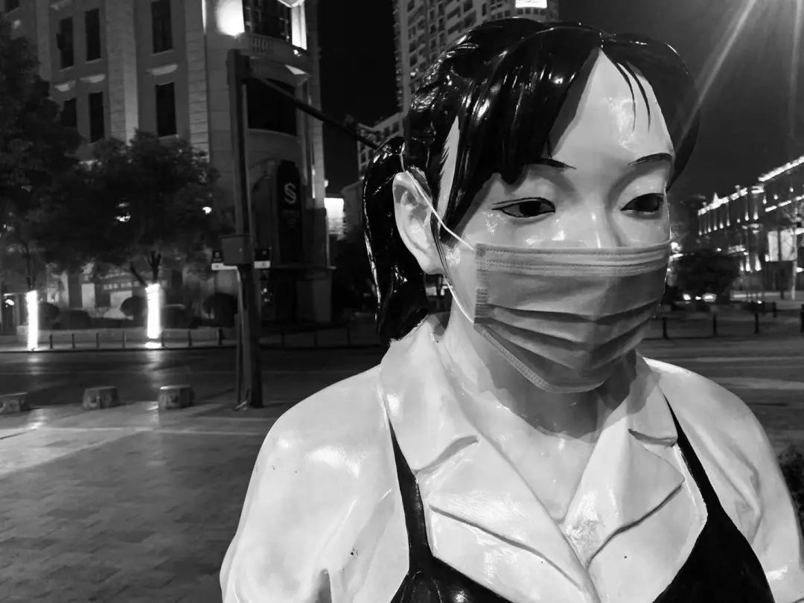
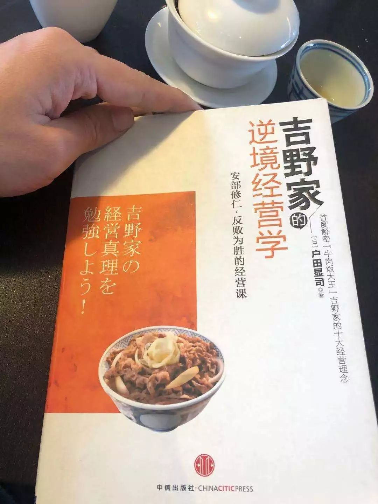
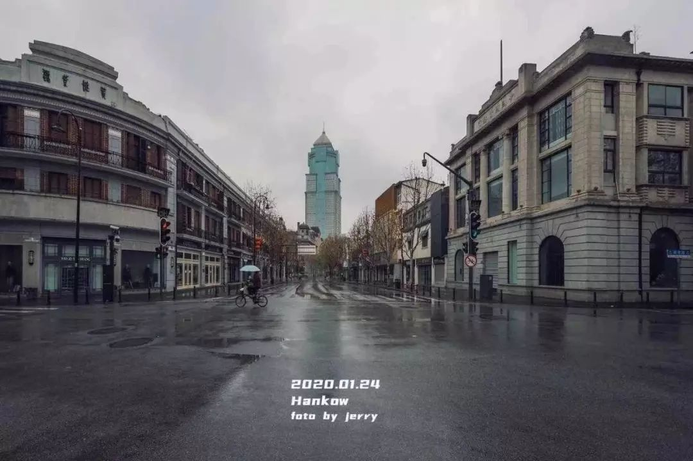
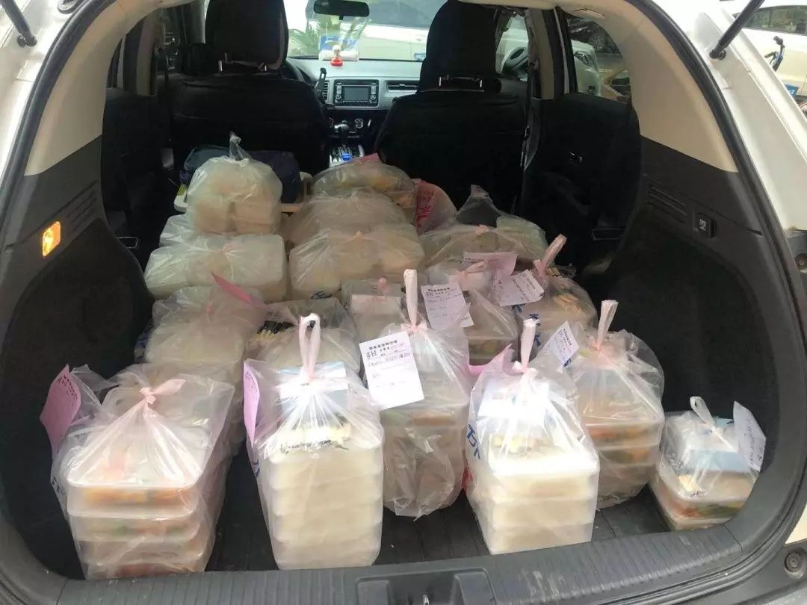
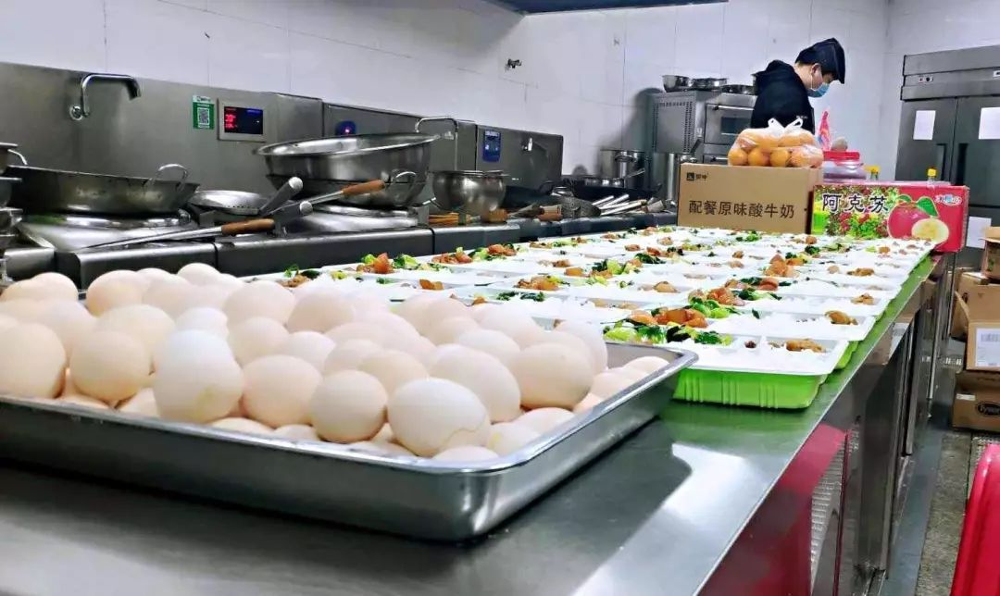
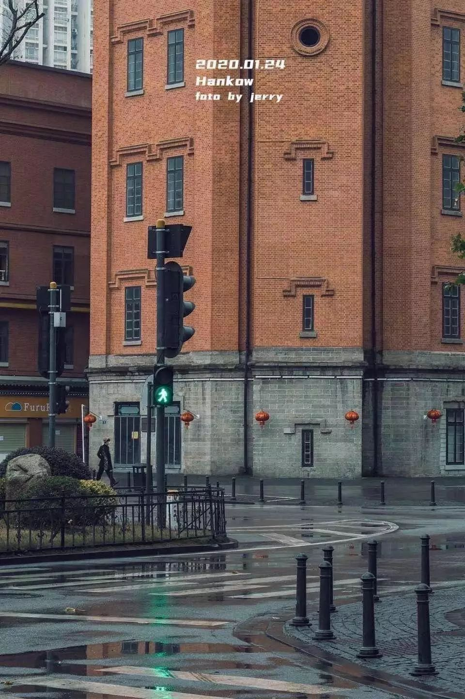

肺炎阴影下，十个普通人的烦恼
原文链接 备份链接 昨天是春节假期后返工第一天，但因为新冠肺炎的影响，注定了是一个不一样的开工日。每日人物询问了10个不同行业已经开工的人，他们正在做的工作，和我们的生活息息相关，记录他们的生活和烦恼，也是记录这次疫情所影响的不同侧面。 …
《创新经济战疫计划》，是燃财经在新型肺炎疫情期间推出的特别栏目，关注创新经济企业遇到的新难题、商讨应该采取的新对策，希望能够帮助中小企业一起战胜挑战、把握机会。本文是第7期。查看前6篇请点击《哪些行业正在逆势爆发？》《中小企业生存指南》《差点倒下的生鲜电商又站了起来》《情人节档，也没了》《线下教育按下“暂停键”》《旅游业的“惊魂”15天》。
作者 | 金玙璠
编辑 | 魏佳
新型冠状病毒肺炎疫情爆发，餐饮行业首当其冲步入至暗时刻。
恒大研究院最新发布的数据显示，疫情对餐饮、旅游、电影、培训等行业冲击最大，预计2020年餐饮行业零售额仅在7天内就会有5000亿元的损失。
海底捞、西贝、外婆家、眉州东坡这样的大型餐饮，尚能够支撑较久时间，且待疫情过后也较有规模优势，但餐饮行业以小微企业为主，这些企业多数资金链紧张，抗风险能力弱。
到今天（2月12日）为止，武汉已经“封城”20天，燃财经采访了武汉当地五位中小型餐饮品牌的创始人，其中多位是从业十年的餐饮老将，他们的企业同样处于兑付供应商货款、提前采购春节旺季食材导致的资金短缺高峰期，承担着员工工资、房租等空转成本，同时要挺过比其他地区的同行更长时间的线下关停、外卖关闭的状态，以及面临后续不可预判的长尾效应。
多数受访者表示，现金流最多再撑3个月左右。如果撑不下去，他们会考虑关闭部分门店、压缩营业面积，调整厨房操作模式、扩大外卖比例，减少开支、给员工只发基本工资等方式自救。未来，他们也准备用申请银行贷款、卖房的方式获取更多资金。
身处漩涡的他们，还传递出了一些不一样的观点。
有人对员工承诺，疫情期间绝不裁员，并和员工约定这段时间“所有人都不能吃胖”，还有人在物资已经匮乏的情况下，捐食材、捐人工、捐资金，每天坚持为医护人员送餐食。他们身处武汉，每出一次门都要承受极高的代价，但他们每天不是在找食材，就是在找食材的路上。
漩涡之外，肺炎疫情防控已经进入第二阶段，多家大型餐饮的老板已经通过媒体发声，希望出台相关政策，来帮助受疫情影响严重的行业，部分已经找到“共享员工”的自救方式，他们也期待着武汉能出台相应的税费、社保、贷款政策，让大家先喘一口气，但他们更关心疫情何时能结束，在那之前，他们没有心情好好去规划企业的未来。
生命大于一切。他们说，压垮一家企业的往往不是灾难本身，而是人心。如果病毒杀死了爱，那会是更恐怖的事情。

武汉封城后的吉庆街
来源 / 受访者供图
***疫情结束只是个开始***
***接下来一连串反应会随之出现***
娘惹裙厨创始人 吕华涛
我们在武汉有三家直营店，营业额正常是6万一天，现在全部关店，产生不了任何收入；春节期间储备了10天的食材，大概20万，因为封城，三四十个员工滞留在宿舍，他们买不到吃的，这些食材都发给员工吃了，加上员工工资每月大概36万到38万之间，这一正一反，对于公司来说，是过百万的损失，现在公司基本断粮了。
湖北规定各类企业复工时间不早于2月13日24时，如果武汉的商场要求餐厅14号开业，那我只能借钱去进货，不然只能违约。而按照疫情目前的态势，初步估计会持续到5月底，而且短时间内疫情的阴霾不会过去，员工不愿意来，顾客更是不会到店里消费，我估计3、4月份的日营业额最多是以往的10%-20%，到时候连缴水电费都是个问题，更不用谈员工工资和房租了。
我2009年创业，到今年是第十一个年头，据我的经验来看，到时候开店就等于亏钱，那何必还要开呢，做企业，就是要把损失降到最低，我们撑不下去，那只能全部关掉，最多留一家店。
回顾读书十几年，外企工作十年，创业十年，这三十几年，感触颇深。2003年，我在广州买了12套房，创业初期，每在武汉开一家店就要卖一套房，巅峰时期有30家店。但是这些年商业格局变化太快了，如果最初不卖房创业，我可能有很多资产，现在回头一看，什么都没有了，就像南柯一梦。
餐饮业的人员、房租成本已经到了极限值，我在武汉开店这十年，租金从来只有涨，没有跌。我们知道业主也很难，但是房地产是长期投资，商铺的损失可以折算到四十年的产权期里，而餐饮是短期行为，损失是折算到三五年里。我们光谷一家月营业额130万的店因为租金太高关店了，还有四家店因为修地铁切断式封路，营收大受影响关了，另外有两家店因为店主P2P跑路等原因被迫关掉了。
2019年，餐饮行业的人工成本占比高达24%-25%，突破22%的红线两个点，是极其危险的，利润空间低到5%-8%，连银行的贷款利息可能都还不上。
如果租金居高不降，那我的店只能提高人效，调整厨房的操作模式，简化菜谱，压缩面积，增加翻台率，扩大外卖的比例。一开始也不指望能赚钱，因为在很长一段时间里，大多数人害怕外出吃饭，那我们就先接团餐，把员工派出去配送外卖，先运转起来。
同时减少公司的开支。我会跟员工谈，能不能接受基本工资，不接受的只能离职；先停缴两个月社保，等有了资金流再补。现在宿舍里的员工也很焦虑，他们需要钱，但是公司发不了，他们不知道门店会怎么样，见不到亲人，也回不了家。
湖北二十多万个餐饮企业，其实大家现在的状态比较类似，都非常焦虑，不知道疫情什么时候结束，而就算疫情结束，也只是个开始，接下来一连串的连锁反应都会出现：供应商会来要上个月的货款，大家都非常困难，就可能要打官司；员工会要补贴，或者让补偿一两个月工资他就辞职，你不赔就可能要应对劳动仲裁；手上的贷款怎么还，国家如果不给免息贷款怎么办。即便疫情结束，只是餐饮人静态的问题结束了，动态的问题随之都会出现。
***卖房也要保住我做了***
***9年的******品牌和并肩作战的员工***
米国煲仔饭创始人 李柏稼
我们是一家连锁快餐企业，在武汉有10家门店，其中一家正准备装修，本想卯足了劲在2020年大干一场，没想到遇上了这样的浩劫。
春节期间我们计划3家商场店正常营业，从钟南山院士说“病毒能人传人”开始，我们一家一家和商场去做关店申请，写了申请报告，商场才同意。我们关店一两天后，所有商场也都关停了。
正常情况下，从正月初五开门营业到元宵节这段时间，所有门店的流水加起来有140万，但是疫情出现了，没有任何现金流，还要负责98位员工的工资、10家门店的租金，非常窘迫。我们80%的员工来自武汉以外的湖北省，从好的角度看，我们关店及时，没有影响到员工，目前所有人都是平安的，没有一个家庭染上病毒。
我一直在工作群里强调，安全第一，充电第二，陪家人第三，让所有人每天报备身体情况，管理层定期在线上做培训直播，组织读书会，带着大家做一些小游戏。因为封城有10人滞留武汉，我也会和员工谈心，尤其对一些年轻人进行心理疏导。我们约定所有人都不能发胖，虽说我们是做餐饮的，但现在毕竟物资匮乏，要以节约为本。
当然，员工最关心的是接下来的安排，我告诉他们：疫情期间绝不裁员，同时也希望员工和我们站在一线，我们和员工商议，从放假以后按基本工资计算。当我把这一点讲出来，所有员工都表示接受，甚至很多人主动提出放弃2月份工资，也有高管提出疫情期间不要一分钱工资，先陪公司度过这次疫情。另外，几个合作多年的房东主动联系我，免2月份房租。种种这些，对我来说都是莫大的鼓舞。
压垮一家企业的往往不是灾难本身，而是人心。现在我们企业停摆了，能做的事情非常有限，但只要人心不涣散，就还可以把所有事情恢复起来。

来源 / 受访者供图
我最近在看《吉野家的逆境经营学》，在日本近代连锁餐饮历史上，除去吉野家，还没有哪一家日本企业能够在二三十年之内两次从重大危机中脱险，这家企业可以做到，哪怕一天不营业，也能保证全员工资正常发放，持续两年的时间。
参考当年的非典，这次餐饮业的复苏至少还需要三到四个月，人心的复苏至少再需要一个季度。而且即便开业，我预判营业额至少下跌30%，到时可能需要增加外卖或者团餐。我们一直注重堂食的体验感，没有过于放大外卖，更没有靠让利充外卖的量，此前堂食、外卖的比例是7:3。不过疫情之后，即便不作调整，客观上这个比例也会倒过来。
我也做好了最坏的打算，和老婆商定，哪怕把房子卖掉出去租房住，也要保住做了9年的品牌和一起并肩作战的员工。
武汉现在所有的餐饮都停了，一些有中央厨房或者有大型食品加工厂的连锁企业，还在为医院无偿供应餐食。他们至少还能尽一份力，像我们这种没有中央厨房的，门店也比较小，虽然在春节前储备了80万-100万的食材，但是所有都存放在郊区黄陂区的中央仓库里，封城后运不进来，想尽一份力也实在没有办法。
不过我相信，疫情之后，武汉的餐饮业会提升一个档次，成为全国的佼佼者。因为武汉是漩涡的中心，所有人都会汲取教训，我们的顾客也会提出更高的要求。而未来餐饮恢复的基础是，戴口罩、戴手套不再是作秀，而是从业习惯，所有餐饮人把食品安全放在第一位。
*****在生命面前先不要谈经济问题*****
十八号酒馆创始人 王帆
我们最老的店开业10年了，有一家店是武汉西餐热门榜第一，还有一家店上了武汉大众点评的酒吧推荐榜，算是全国非常有名的精酿酒馆了。近三四年，春节期间的聚会多选在酒馆，我们店的客人一年比一年多，因为疫情，原计划在春节期间照常营业的4家店铺关停了，在封城那天，我们各店进行了全面消毒。

闭店前的全面消毒
来源 / 受访者供图
我们为春节营业储备了45万左右的食材和酒水，其中一些新鲜的食材和鲜啤，成了留守员工的口粮，还有一部分发放给了医护人员。现在停业期间，三家店每天损失8-10万的营业额，而公司现金流只能再顶两个半月，如果持续到三个月以上，我只能个人借贷了。
餐饮只是我们的板块之一，我们还有贸易公司和啤酒工厂。疫情过后，餐饮肯定会慢慢恢复，客观上这次疫情会倒逼餐饮企业成长，更注重生产安全、店铺的操作安全和透明度，以及进货渠道的把控。我们的贸易公司是对酒吧和餐厅的，现在有些个人用户和销售联系，问能否配送啤酒，但是我们不知道如何完成足够安全的配送服务，也没有拿出非常好的标准，所以贸易公司也暂停了。
我比较担心的是酒厂，原本计划春节后推出一款季节性的樱花啤酒，这款酒的生产排期全部做完了，100吨就在酿酒罐里。但是现在最大的困扰，一方面是外界对武汉生产的酒水食品安全的顾虑，不知道会持续多久，也无法做预测，因为非典时期食品饮料行业的规模是现在的1/30，无法和今天相比。另一方面，我们的客户遍布全国各地，不知道物流什么时候能恢复，精酿啤酒的保质期又比较短，导致整个供应链有点乱，生产又必须盯现场，我不能让员工冒着生命危险去值班，所以只能全部停了。
最近团队正在想一些出路，我们计划把这个批次的酒在线上平台以义卖形式，捐赠给现在受疫情困扰的人们、奋斗在一线的医护人员。现在受限于物流，我们只能是预售的形式，先救他人，再自救。
以前算账的时候，当金额只是数字，比如说可能要损失200万，没有太深的感触，但是随着疫情的深入，所有板块都停了，当结算日要计算欠供应商的货款、即将要发的工资，当财务把数据发给我，对我的触动还是挺大的。
武汉中山大道
来源 / 受访者供图
我是土生土长的武汉人，心态经历了几个阶段，疫情初期是懵的，随后是恐慌，现在是想办法和自己和解，想自己该如何生活，每天给自己定计划。我们也在想，能为这座深爱的城市做点什么？于是，我们的员工义务救助了留守武汉的40只猫咪，我们的酿酒师自愿开车接送医生上下班。
而我从年初一开始，和朋友计划拍一部纪录片，记录武汉的特别时刻，主要采访对象是这座空城的“守城人”，外卖小哥、环卫工人、普通警察、记者……当一座城市生病了，他们依然是供给营养的毛细血管，采访路途中，看见空无一人的京汉大道、吉庆街、凌波门，只有心疼。记得从封城第5天开始，江边原本只有国庆才会有的亮化工程每晚都会亮起，江边的楼体上到处都是“武汉加油”。

武汉封城后的月湖桥
来源 / 受访者供图
但是现在又回到无力感的状态，相比我们这些身处漩涡中心的人，我觉得在外地回不了家、受到歧视的武汉人更痛苦。如果病毒杀死了爱，那会是更恐怖的事情。现在网络上很多声音呼吁大家关注餐饮行业，关注中小企业，经济固然重要，但是现在不是吃不上饭的问题，是生与死的问题，在生命面前先不要谈经济问题。当市场经济为导向的时候，可能就有人就忘了自己的社会属性。

***我整个人都处在救灾状态***
***还没有心情考虑自救***
捞旺猪肚鸡火锅创始人 叶锦盛
捞旺从路边店做起，最初档次不高，后来进了商圈，慢慢往中高端走，到现在门店在武汉有27家，全国有36家。
每年一二月份，是猪肚鸡火锅最旺的月份，除了年三十前后一两天生意不太好，2月份营业额保守估计能到1100万左右，但是现在全部关门停业了，还承担着200万的员工工资、190万的房租。
湖北规定各类企业复工时间不早于2月13日24时，现在有几个商场叫我2月14日以后营业，我不会开的，至少撑到3月1日以后再说。因为即便营业，也没有人敢出门，整个武汉城空荡荡的。而且很多员工年前都回老家了，身体都很健康，我又怎么忍心让他们回到重灾区呢。现在没有办法，什么都做不了。
坦率讲，现在疫情还没有稳定下来，我整个人都处在救灾的状态，还没有心情回过头来考虑企业怎么自救。
从大年三十开始，我和湖北省广东商会另外两个老板，就没有停下来过。我们都是厨师出身，马上凑了一些钱，第二天起就给医护人员供餐。因为我们是火锅店，没办法做中餐，就把餐厅春节储备的食材都拿出来，另一个老板负责人工制作。到目前为止，我们每天从早上7点干到晚上8点，保证一天把1500份餐做出来、送出去。

医护餐启程送往医院
来源 / 受访者供图
后来员工实在累了，中途对接了一个志愿者平台，加入了七八位志愿者过来协助我们装盒；装好了以后，很多有车一族的志愿者直接送到武汉同济医院、武汉协和医院，还有雷神山、火神山医院的指挥部。这些工作人员都只戴着一张口罩，每天承受着极大的风险。
通过这次疫情，我看到湖北大部分餐饮老板都非常好心，很多人捐钱，但是现在最大的问题是，有钱也没有用。我动员仟吉面包的同学运来10万个面包做补充，再想要去找牛奶，所有货源都没货了。还有一些生鲜根本买不到，我就想尽各种办法，联系武汉各个餐厅的老板，他们愿意的话就把食材捐出来，不愿意，我就跟他们商量，能不能卖给我。到初七以后，找食材就没那么困难了，虽然依然封城，但是会允许一些食材进来。
这段时间，每天接触一线的医护人员，我最痛恨的是自己没有能力，只能做些能力范围内的事，那就能坚持多久就坚持多久吧。

*****对于外卖业务，我没有太大信心*****
武汉柏年丰餐饮创始人 李蜀慧
从2019年12月30日，武汉报道第一例疫情开始，我司便按照当年非典的经验，开始安排公司进行自我防护和餐厅消毒的培训。但是同比上一年的业绩，各门店都出现了20%的下滑。我祈祷疫情不要发展到非典当年停业停工的状态，但是很不幸，直到钟南山先生宣布新冠肺炎病毒有人传人迹象时，商场门店的业绩下滑了90%，我们老八门中餐店的110桌年夜饭全部被客人退订。1月22日所有门店全部停业。幸运的是，公司十三个直营门店，200多个员工，没有出现一例发热的情况。
闭店第二天，合伙人熊飞在网络上看到一线的医生只有泡面吃，餐食得不到保障，于是和朋友发起，把自家库里的食材拿出来，用来给医护人员供餐，很多人加入了。
其实过程中，最难的问题是食材和交通。自家的食材用完了，湖北烹饪协会协调的大量蔬菜、水果、调料用完了，接下来每一天都在寻找食材，外面的食材进不到武汉，当地所有超市都买不到猪肉和新鲜的鱼类。再者，公共交通停运，员工出不来也回不去，参与医院供餐的人只有10多个，他们现在每天承受着高风险在作业，这期间公司支付双倍工资。
这些是我们目前能做的事情，能做多久就做多久吧，我现在每天祈祷，员工中千万不要有病例出现，如果有，这件事肯定没办法进行了。

医护餐制作完毕
来源 / 受访者供图
2019年，只有20%的餐饮人能挣到钱，行业已经很难了，大家原本是非常期盼这个春节的，把利润都拿去再投入了，把员工、食材、资金各方面储备的力量都放在了春节，谁也没有想到，突然下了一场“雪”。我司春节备货100万，退订损失30万，每月人工、房租固定成本都在110万，公司现金流已经断掉了。
据我所知，所有同行都损失惨重，企业越大损失越大。武汉几家大型宴会每家春节备货都在500万以上，退订就有一千多桌，只能闭店，临时交通封闭，员工有家不能回，都呆在宿舍每日以零食泡面充饥。
所有上游供货商也损失巨大。尤其华南海鲜市场，自1月1日整个市场封闭后，任何货物都无法取出，有的海鲜老板损失上千万，很多门店都是个体经营者全家的生活收入来源。
我目前能想到的自救措施都是比较常规的：继续甲方谈判，能不能减免部分房租；再想办法贷款；未来在餐厅的食材供应、服务上更注重健康，因为大家发现拼到现在拼得就是抵抗力。
但是对于外卖业务，我没有太大信心。餐饮行业的利润率只有10%，外卖平台在收取配送费以后，继续抽成20%-25%，我们哪里还有利润，如果未来还是这么高的扣点，即便做也不挣钱。
以我目前了解的信息预估，武汉餐饮行业的冰冻期至少要到5月份。
其实我们餐饮企业现在做公益也都是打肿脸充胖子，大家都是想让疫情快一点结束。成都、江苏都出台了扶持中小企业的政策，武汉能不能也有相应的税费、社保、贷款的政策出来，对地产业主提供规模化补贴，再通过3-6个月以上的免租惠及到终端餐饮企业，让大家先喘一口气，企业自己再想办法承担员工的生活问题，没有钱发工资，我们发米发油也不会让员工饿肚子，也希望政府在出台政策的时候，能不能优先考虑在这次疫情中做贡献的企业以及不裁员的企业。不过我们理解，现在政府还无暇顾及我们，毕竟先要解决当前的医疗问题。

武汉中山大道
来源 / 受访者供图
*题图来源于视觉中国。
— 征集 —
欢迎加入“燃财经创新经济战疫计划”。
疫情之下、行业巨变，为了帮助创新经济企业战胜挑战、把握机会，燃财经推出“创新经济战疫计划”。该计划包含三部分：栏目报道、线上沙龙、行业社群。
栏目报道部分和线上沙龙部分，征集希望给创新经济献计献策、共克时艰的创业者和投资人，参加报道、讨论和互助。欢迎在评论区留言或在后台私信我们，请注明“创业者”或“投资人”。
行业社群部分，征集关注此话题、愿意参与社群的读者，欢迎在后台私信我们，注明“计划”，入群之后我们将提供讨论平台、沙龙直播等后续服务。


你的餐馆遇到了哪些问题？
欢迎在评论区留下你的故事，我们会在点赞前三（超过20个）的评论里挑选一位网友，送出网易云音乐季卡一张****。文章转载请点击公众号菜单“转载合作”。
一手资讯/硬核报告/每日红包/线下活动！就差你了！快加微信rancaijing02回复“读者”一键上车！


燃财经工作室
点个在看吧😘
微信扫一扫赞赏作者 赞赏
长按二维码向我转账
点个在看吧😘
受苹果公司新规定影响，微信 iOS 版的赞赏功能被关闭，可通过二维码转账支持公众号。
文章已于修改
原文链接 备份链接 昨天是春节假期后返工第一天，但因为新冠肺炎的影响，注定了是一个不一样的开工日。每日人物询问了10个不同行业已经开工的人，他们正在做的工作，和我们的生活息息相关，记录他们的生活和烦恼，也是记录这次疫情所影响的不同侧面。 …
原文链接 备份链接 今天是武汉每日书第八篇。有在汉口的市场销售人员，在武汉的自由职业者，在黄石的编剧……共同书写他们在这次疫情中所经历的生活片段，关于日常饮食、亲情反思和人间观察。 **01 ** 封城时刻， 如何点一份让人放心的外卖 …
原文链接 备份链接 非常时期，武汉成了全国人民挂念、祈福的城市。封城后，武汉人民的真实生活是什么样？ 正和岛自1月26日起特别推出《叶青：我在武汉疫区的第N天》专栏。叶青是一位定居武汉40年的市民，也是一名学者和官员。接下来的一段时间， …
原文链接 备份链接 _ 今起武汉全市范围对居民小区实施封闭管理。小编身在武汉，响应号召，更要在家安心分析数据。武汉挺住！ _ 文 |《财经》数据研究员 徐进 图 | 视觉中心总监 黎立 编辑 | 谢丽容 1. 今日概况 2月10 …
原文链接 备份链接 图片来源：图虫 记者：张钦 编辑：昝慧昉 “ 此前海底捞发布公告称，考虑到近期疫情发展情况，中国内地门店停业时间将会继续延长。 ” 近日，江苏省常州市发布《关于紧急扩散寻找相关接触者的通知》：常州市在排查确诊的新型冠状 …